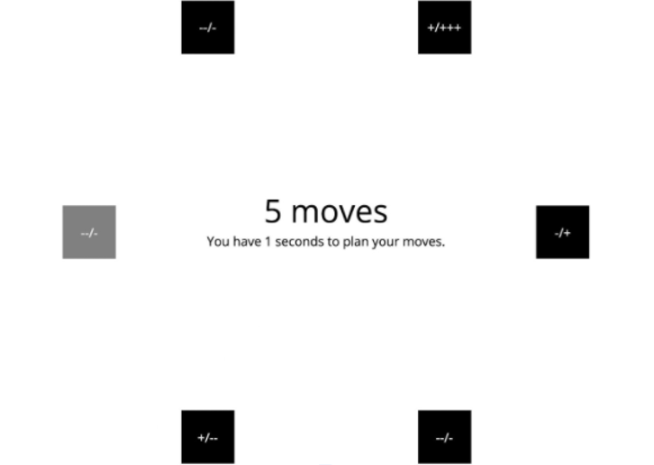

Welcome to my website. Below are descriptions on my projects, working experiences, passages and random thoughts. Categories in the sidebar contains categorization of all contents. About includes some information about myself. Feel free to contact me.
Cognitive Development Lab - Prediction Learning in Social Environments
This project aims to analyze people's decision making process with learning under uncertainty through a multi-arm bandit paradigm.
The experiment is implemented as an ice-hole fishing game. There are three ice-holes in total. Probability of winning a fish from picking an icehole are 0.3, 0.6 and 0.9, which are randomly assigned for each icehole for each player.
The probability of getting a fish for player one might be different for player two. Two participants take turns to choose, and they can both see the outcome after choosing it. They do not know the probability for each icehole.

The goal of the study is to analyze the learning and decision making process of participants under uncertainty, including how they are impacted by their own choices and outcomes, and others’ choices and outcomes. As the game goes on, they will gradually understand the underlying properties and relative probabilities of each ice-hole and make decisions to maximize the chance of getting fish.
Online Experiment
This experiment was originally in-person. However, due to COVID-19, we had to build an online platform to continue working on this project. The online experiment is implemented using JavaScript with the OpenSesame Program.
My Work in the Project
My responsibilities in this project surrounds the online experiment and the server. I improved some features in the online experiment. I also work to keep track of the experiment server and make sure everything works as expected.
More Information
This is a project conducted in the Cognitive Development Lab in the Cognitive Science Department of University of California, San Diego. I joined the lab for the course COGS160 - Cognitive Development Lab Practicum, and continued to work in the lab as a volunteer.
Mattar Lab - Decision Making and Eye Tracking Project
This project analyzes the human decision-making process and its relationship with eye movement.
Based on the previous Bonsai experiment, our experiment added the feature of web-cam eye-tracking, which allows us to retrieve eye tracking big data and make analysis.
Experiment Design

The experiments is conducted with 2 phases, along with an eye-tracking calibration and validation.
Eye-tracking calibration and validation is conducted first. This is to make sure whether the participant's working environment is suitable for this experiment. If they fail the validation three times, the experiment will automatically end.
In phase 1 of the experiment, 40 trials will be conducted by the participant to learn the path of six boxes. LEFT and RIGHT key presses are allowed. From each box, a LEFT key press can always lead to one other specific box. Similarly, a RIGHT key press can always lead to another box. Below is a demo of the box positions.
In phase 2 of the experiment, the participant would perform 30 trials on a path selection and reward task. Given the starting box and the number of steps allowed, the participant can think for 9 seconds and press the moves all at once. Boxes are shown with possible outcomes like "--/+++", in which one of the allowed key press would always grant one of the outcomes. It is the participants' responsiblity to learn the relationship.
Methods
This experiment is implemented using JavaScript. Data Analysis are conducted using Python. We are still in the progress of revising and conducting the experiment, and analyzing data.
Sub-Branches
A sub-branch of this experiment uses the same terminology. However, instead of using the web-camera for eye tracking, we uses a real eye-tracker to retrieve eye movement data. Since data with a real eye-tracker is more accurate, this can help us identify some relationship between decision making and eye movement. The result can be compared with the main branch (web-cam eye-tracking) to infer on the accuracy of the web-cam eye-tracking experiment.
Another sub-branch of this experiment also uses the same terminology, but excluded eye-tracking. This allows us to examine the decision-making patterns, to better understand the relationship between decision-making process and eye-movement.
My work in this project
As a team, we collabratively came up with the experimental design, and implemented the experiment. We all took some part on analyzing the data, and coded for visual representation for a clearer understanding.
My main focus of this experiment is on the sub-branch of conducting the experiment using a real-eye tracker. I achieved the integration of the device and the experiment. Eye-tracking data are primarily saved as a video. Thus, I implemented Computer Vision algorithms to label the eye fixation points to different boxes for futher analysis. This sub-branch is conducting in progress.
More Information
This is a project conducted in the Mattar Lab in the Cognitive Science Department of University of California, San Diego.
MANY THANKS to Dr.Mattar as the supervisor, and my teammates who work on other parts of this experiments while offering me so much help.